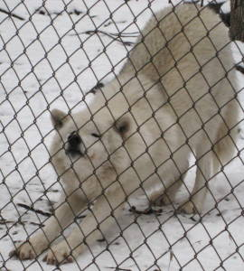

Lakota Wolf Preserve
Lakota
Wolf Preserve is at 89 Mt. Pleasant Road, Columbia, NJ, pretty close
to the Delaware Water Gap. See http://www.lakotawolf.com
They
host wolves, foxes, and bobcats that are unfortunately adjusted to
captivity and life with humans, unable to return to the wild.
They are allowed to live out their lives here in safety in this
10 acre preserve. I visited twice so far, once in the summer, and
once in the winter. Here are some pictures:
Summer VisitWinter VisitBack